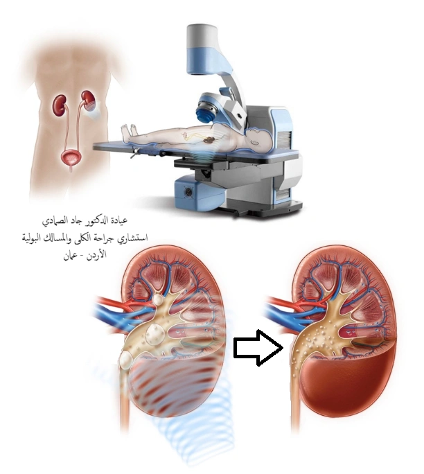

تفتيت حصى الكلى والمسالك بالموجات الصادمة - Shockwave lithotripsy (ESWL) -
مقدمة عن تفتيت الحصى بالموجات الصادمة:
تفتيت الحصى بالموجات الصادمة من خارج الجسم - Extracorporeal Shockwave Lithotripsy (ESWL) - هي تقنية لعلاج حصى الكلى و حصى المسالك البولية التي لا تتطلب بالضرورة إجراء عملية جراحية. وهي تتضمن استخدام موجات الصدمة عالية الطاقة التي يتم تمريرها عبر الجسم واستخدامها لتفتيت الحصى إلى قطع صغيرة بحجم حبيبات الرمل. وبسبب صغر حجمها، يمكن لهذه القطع أن تخرج من الجسم مع البول.
تعتمد نسب نجاح تفتيت حصى المسالك البولية على عوامل عديدة ومتعددة؛ منها الحجاز المستخدم في التفتيت، وعوامل الحصوة نفسها مثل الحجم والصلابة وموقع الحصوة داخل الكلية و موقعها في الحالب، وعوامل جسم الإنسان حيث تقل الفعالية مع زيادة الوزن أو عند وجود تشوهات في العمود الفقري، و عوامل طريقة التفتيت بالموجات الصادمة نفسها مثل الطاقة المستخدمة وتكرار الموجات الصادمة وعوامل أخرى.
كما ويعتبر ضبط جهاز التفتيت بالموجات الصادمة مهماً في نسب المضاعفات المحتمل حدوثها من عملية تفتيت الحصى. والمقصود بضبط جهاز تفتيت الحصى هنا هي نفس العوامل المذكورة أعلاه مثل معدل تكرار الموجات والطاقة المستخدمة ومعدل الزيادة في الطاقة المستخدمة وغيرها.
ما هي دواعي استعمال تفتيت الحصى بالموجات الصادمة (ESWL)؟
-
حصى الكلى الأقل من حجم 2 سم. على أن لا يكون هنالك عوامل تؤثر على فعالية تفتيت الحصى بالموجات الصادمة.
لمحة عامة وشاملة عن حصى الكلى -
حصى الحالب ذات الحجم أقل من 1 سم.
نظرة عامة عن حصى الحالب و خيارات علاج حصوة الحالب - لا مانع من استخدام تفتيت الحصى بالموجات الصادمة في أنواع وأحجام حصى المسالك البولية الأخرى؛ لكن ما ذكر في أول خيارين هما الدواعي الأفضل للتفتيت بالموجات الصادمة وذلك للحصول على أعلى نسب للتخلص من الحصوة بشكل نهائي و دون الحاجة لعمليات أخرى.
متى لا يجب تفتيت الحصى بالموجات الصادمة؟
- الحمل، بسبب التأثيرات المحتملة على الجنين.
- القابلية النزيف، والتي في حال كانت من الإمكان السيطرة عليها؛ مثل ايقاف المميعات، ينبغي السيطرة عليها لمدة 24 ساعة على الأقل قبل جلسة تفتيت الحصى بالموجات الصادمة و48 ساعة بعد جلسة التفتيت.
- التهابات المسالك البولية الموجودة؛ والتي يجب علاجها قبل تفتيت الحصى بالموجات الصادمة.
- التشوهات الهيكلية الشديدة والسمنة المفرطة، مما يمنع استهداف الحصوة؛ وفي هذه الحالات من المستحب اختيار خيار جراحي آخر لعلاج حصى المسالك البولية غير تفتيت الحصى بالموجات التصادمية. مثل عملية تنظير الحالب في حال حصى الحالب - عملية تنظير الحالب - أو عملية تنظير الكلية بالمنظار المرن في حال وجود حصى الكلية - عملية المنظار المرن للكلية .
- وجود تمدد الأوعية الدموية (مثل Abdominal Aortic Aneurysm (AAA) أو Renal artery aneurysms) في محيط الحصوة أو بالقرب من مجال الموجات الصادمة للحصى المطلوبة.
- وجود انسداد بعد الحصوة المراد تفتيتها بالموجات الصادمة. حيث أن نتائج تفتيت حصى المسالك البولية تعتمد على المرور التلقائي للرمل والفتافيت الناتجة عن التفتيت ووجود انسداد بعد الحصى قد يعيق أو يمنع خروجها. ومن الأمثلة على هذه الإنسدادات تضيق مخرج الكلية أو ما يعرف بانسداد الوصلة الحوضية الحالبية - Pelviureteric junction obstruction (PUJO) - وهذه مشكلة شائعة في حالات حصى الكلى.
تعتبر المشاكل أو العوامل المذكورة هنا من الأشياء التي تمنع إجراء تفتيت حصى الكلى والمسالك البولية إما لانعدام فعالية التفتيت أو لارتفاع خطورة إجراء تفتيت الحصى بالموجات الصادمة. لكن لحسن الحظ فإن هذه المشاكل لا تتواجد عند غالبية اللذين يعانون من وجود حصى في المسالك البولية واللذين من المحتمل استفادتهم من التفتيت بالموجات الصادمة. هذا بالإضافة الى إمكانية إجراء عمليات أخرى لحصى المسالك البولية مثل إجراءعملية تنظير الحالب في حصى الحالب، حيث أن هذه العملية متوفرة في جميع المستشفيات تقريباً ولا تحتاج للبقاء في المستشفى لفترات طويلة. أو إجراء عملية المنظار المرن في حصى الكلى وغيرها من العمليات البديلة لتفتيت الحصى بالموجات التصادمية من خارج الجسم.
مضاعفات تفتيت الحصى بالموجات الصادمة:
بالمقارنة مع تفتيت حصوات الكلى عن طريق الجلد (PCNL) أو ما يعرف بعملية بزل الحصى عملية بزل حصى الكلى عن طريق الجلد ، وتنظير الحالب (URS)، فإن المضاعفات الإجمالية مع تفتيت حصوات الكلى باستخدام الموجات الصادمة (SWL) أقل. حيث أثبتت الدراسات أن مضاعفات تفتيت الحصى بالموجات التصادمية من خراج الجسم تصل الى ما نسبته 18,5 بالمائة للمضاعفات الخفيفة؛ وما نسبته 2,5 بالمائة للمضاعفات الشديدة. والمقصود بالمضاعفات الشديدة لتفتيت الحصى بالموجات الصادمة هي المضاعفات التي تحتاج لتدخل جراحي إضافي نتيجة لعملية التفتيت.
أما عن سؤال؛ هل تفتيت حصى الكلى وحصى المسالك البولية بالموجات الصادمة يتسبب في السكري أو مرض ارتفاع ضغط الدم؟ حيث يوجد العديد من الدراسات التي تناولت هذا الموضوع، ومنها ما أثبت ارتفاع نسب حدوث أمراض طويلة الأمد مثل السكري وارتفاع ضغط الدم، ومنها ما أثبت عدم ارتباط تفتيت الحصى بالموجات الصادمة بهذه الأمراض. ويبقى هذا السؤال دون إجابة مثبتة علمياً. لكن بشكل عام ولحد الآن ليس بالإمكان القول بأن تفتيت الحصى بالموجات الصادمة يتسبب بأمراض مزمنة وتبقى الإحتمالات مفتوحة.
-
مضاعفات تفتيت الحصى بالموجات الصادمة والمتعلقة بالحصى وقطع الحصى الناتجة عن التفتيت:
- وجود دم في البول؛ مرئي بالعين المجردة، ونسبة حدوث هذه المضاعفة بعد تفتيت الحصى بالموجات الصادمة عالية وتصل الى 17 بالمئة أو أعلى.
- حدوث ألم ناتج عن تفتيت الحصى بالموجات التصادمية؛ ونسبة حدوث ذلك أيضاً مرتفعة، حيث تصل الى 12 بالمئة او أكثر، ويكون هذا الألم مقبولا في أغلب الحالات وبالإمكان السيطرة عليه بتناول الأدوية المسكنة عن طريق الفم.
-
المغص الكلوي أي ألم الخاصرة الشديد؛ ونسبة حدوث هذه المضاعفة من التفتيت بالموجات الصادمة 2-4 بالمئة، واذا كان السبب وجود حصى صغيرة علقت في الحالب او أدت الى انسداد الحالب فقد يتطلب ذلك إجراء عملية وضع قسطرة حالبية لإزالة الإنسداد.
لمحة شمولية عن عملية دعامة الحالب أو القسطرة الحالبية - DJ-Stent - من مضاعفات تفتيت حصى الكلى والمسالك البولية بالموجات الصادمة حدوث تراكم قطع من الحصوات أو حصى صغيرة في الحالب مما قد يعيق مرور البول، وتعرف هذه الحالة بـ (الستاينستراس، Steinstrasse). وتحدث هذه الحالة في 4 بالمائة من حالات تفتيت الحصوات بالموجات الصادمة، والعامل الرئيسي في تطور تكون الستاينستراس هو حجم الحصى أي كلما ازداد حجم حصى المسالك البولية خاصة في حال حصى الكلى الأكبر من حجم 2 سم كلما زادت احتمالية حدوث هذا التراكم للحصى في الحالب. وتكمن أهمية مشاكلة شتاينستراس في حدوث انسداد الحالب، والذي قد يكون صامتًا؛ أي دون أعراض، في ما يصل إلى 23 بالمائة (مايقترب من ربع حالات الستاينستراس) من الحالات. وانسداد الحالب قد ينتج عنه مضاعفات لاحقة مثل حدوث التهابات بكتيرية وحرارة عالية. ومع أن علاج هذه المشكلة قد يتم بشكل سلس وبالتدريج مثل محاولة أن تمر قطع الحصى بالعلاج التحفظي أو الأدوية المساعدة على المرور؛ أو باستخدام عملية تنظير الحالب أو حتى التفتيت بالموجات الصادمة على هذا التجمع من الحصى؛ لكن في بعض الأحيان قد تتطور الأمور الى الحاجة لتصريف الكلية للسيطرة على الإلتهابات في المسالك البولية والتي يصعب السيطرة عليها في حال وجود انسداد. وهذا التصريف يكون اما بوضع دعامة حالبية ( عملية دعامة الحالب / القسطرة الحالبية /DJ ureteral stent ) أو في حال عدم تمكن دعامة الحالب من المرور، قد يحتاج الى أنبوب يصل الى الكلية من الجلد في الجنب (أنبوب فغر الكلية)؛ أنبوب فغر الكلية . وبعد السيطرة على الإلتهاب يتم استكمال علاج الحصى سواءاً الحصوة الأصلية أو تجمع الحصى الذي حصل في الحالب. لهذا ينصح أحياناً بإجراء وضع قسطرة في الحالب مسبقاً وقبل البدء بتفتيت الحصى بالموجات الصادمة في حال كانت حصى المسالك البولية كبيرة الحجم، وبسبب أن وضع قسطرة الحالب في حال وجود انسداد من الحصى المتراكمة في الحالب قد يكون صعباً أو في حال الإلتهابات البكتيرية قد يكون خطيراََ.
- نمو بقايا الحصوة لتكوين حصى مرة أخرى؛ من المعروف أن تفتيت حصى المسالك البوليه بالموجات الصدمة تعتمد على خروج الرمل وقطع الحصى الصغيرة لوحدها عبر المسالك البولية ومن ثم للخارج. وهذا يعني أنها أحياناً تبقى مكانها وتعود لتنمو في الحجم مكونة حصى مرة أخرى، ونسبة حصول هذا تتراوح بشكل كبير وهي بين 20 بالمائة الى 60 بالمائة. ومن بين العوامل المهمة التي تزيد كثيراً من بقاء الرمل وقطع الحصى الصغيرة في مكانها دون الخروج للخارج هو موقع الحصوة خاصة حصوة الكلى الموجودة في الجزء السفلي من الكلية؛ شعب الكلية السفلية.
-
مضاعفات تفتيت الحصى بالموجات الصادمة والناتجة عن التهابات المسالك البولية:
- حصول التهابات المسالك البولية من تفتيت الحصى بالموجات الصادمة موجود حتى اذا كانت الحصى من الأنواع غير المحتوية على الإلتهابات، ونسبة حدوث الإلتهابات منخفضة. لذلك لا يتم إعطاء مضاد حيوي وقائي قبل جلسات تفتيت الحصى بشكل روتيني. الا أنه من المستحب سؤال دكتور الكلى والمسالك البولية عما اذا كنت تحتاج لأخذ مضاد حيوي وقائي قبل جلسة التفتيت بالموجات الصادمة، وذلك لأن بعض الحالات تتطلب ذلك.
- وصول البكتيريا للدم وتسمم الدم، نسبة حدوث هذا نادرة وتقارب 15 من كل عشرة آلاف؛ وتسمم الدم يحتاج للدخول للمستشفى لأخذ العلاج المناسب.
-
مضاعفات تفتيت الحصى بالموجات الصادمة والناتجة عن تأثير الموجات الصادمة على أنسجة الجسم:
من مشاكل تفتيت الحصى بالموجات الصادمة هي أن الموجات تصطدم بالأنسجة المحيطة بالحصى سواءاً الأنسجة ما قبل وصولها للحصوة أو أنسجة الكلى والمسالك البولية أو الأعضاء المحيطة بالكلى مثل الكبد أو الطحال أو القولون. أو الأنسجة ما بعد مكان الحصى، لذلك فإن وجود مشاكل أو أمراض مثل التوسع الشرياني يعتبر مانع لاستخدام تفتيت الحصى بالموجات الصادمة. و من المشاكل الناتجة عن أثر الموجات الصادمة على أنسجة الجسم ما يلي:-
- تجمع الدم في الكلية سواءاً بشكل خارجي أو داخل أنسجة الكلية نفسها وهو ما يسمى بالورم الدموي الكلوي. وغالباً ما يكون هذا الورم الدموي بدون أعراض ويتم ايجاده فقط اذا تم إجراء تصوير للكلى خلال فترة قصيرة من التفتيت بالموجات الصادمة مثل تصوير الكلى بالألتراساوند، أو اجراء تصوير طبقي للكلى والمسالك البوليه. أما في نسبة بسيطة من الناس تتراوح حول 2 بالألف يكون لهذا الورم الكلوي الدموي أعراض مثل الألم في الخاصرة أو البطن أو الظهر، و أحياناً ارتفاع الحرارة.
- ورم دموي في الكبد وهذا نادر الحدوث ويحدث فقط عند تفتيت حصى الكلى أو حصى الحالب الأعلى في الجهة اليمنى.
- ورم دموي في الطحال وهو نادر جداً. وبالإمكان حدوثه في الجهة اليسرى من الجسم بعد التفتيت بالموجات الصادمة لحصى الكلية اليسرى أو حصى الحالب الأعلى الأيسر.
- التأثير على القولون، حيث أن القولون يلاصق الكلى على الجهتين ويمر من أمامهما. وتم ذكر حالة لانفجار القولون في الجمعية الأوروبية لجراحة الكلى والمسالك البولية نتيجة لتفتيت حصى المسالك البولية بالموجات الصادمة، لكن هذا نادر جداً جداً.
ما هي نسبة نجاح تفتيت حصى الكلى والمسالك البولية بالموجات الصادمة؟
تترواح نسب نجاح تفتيت الحصى بالموجات الصادمة كثيراً حيث تبدأ من نسب 30 بالمائة وتصل الى نسب 90 بالمائة. لكن في المتوسط فإن نجاح تفتيت الحصى بالموجات الصادمة في الحالات التي يقررها أخصائييوا المسالك البولية تكون بين 70-80 بالمائة. والسبب في هذا الإختلاف الكبير في النتائج يعود الى كل ما تم ذكره سابقاً من حجم الحصى وكثافتها وموقعها؛ حيث أن وجود الحصى في أسفل الكلية على سبيل المثال يقلل كثيراً من نجاح التفتيت بالموجات الصادمة حتى في الحصى صغيرة الحجم نسبياً، كما وأن نوع الحصى له علاقة بنسب النجاح فبعض أنواع حصى الكلى والمسالك البولية لا تستجيب للتفتيت بالموجات الصادمة او تستجيب بشكل منخفض مثل حصوات أكسالات الكالسيوم أحادية الهيدرات، وحصى السيستين، وحصى فوسفات الكالسيوم. هذه الأنواع من حصى المسالك البولية تعتبر مقاومة نسبيًا لتفتيت الحصوات بالموجات الصادمة خارج الجسم ومنها ما يكون ذا صلابة عالية ومنها ذو صلابة منخفضة ورغم ذلك يقاوم الموجات الصادمة. لذلك فإن بعض الدراسات تظهر نتائج عالية للاستجابة للتفتيت بالموجات الصادمة، وهذا صحيح في حال اختيار المرضى المناسبين لإجراء تفتيت الحصى بالموجات من خارج الجسم. أما في حال التفتيت لكل حالات الحصى فقد تظهر نتائج نجاح منخضة.
ما اللذي يمكن فعله لتسهيل خروج الحصى خارج الجسم بعد التفتيت بالموجات الصادمة من خارج الجسم؟
- طبعاً ودائماً الإكثار من شرب السوائل؛ تحديداً شرب الماء.
- استخدام الأدوية التي تساعد على مرور الرمل والحصى الصغيرة الى خارج المسالك البولية وتحديداً من الحالب. على الرغم من النتائج المتضاربة حول هذه الأدوية الا أن غالبية الأبحاث توافق على استخدامها وأنها تزيد من معدلات خروج الحصى الصغيرة كما وتقلل من نسبة الإحتياج للمسكنات. ولأن الحالب هو أضيق مكان في جهاز الكلى والمسالك البولية فقد تم ذكر هذه الأدوية في موضوع حصى الحالب .
- استخدام مدرات البول. على الرغم من أغلب استشاريي الكلى والمسالك البولية لا يحبون استخدام مدرات البول وذلك لتجنب المضاعفات التي قد تنشأ عنها و منها نقص السوائل في الجسم. الا أن ادرار البول يساعد في خروج الحصى الصغيرة والرمل على شرط عدم وجود انسداد في المسالك البولية.
- استخدام جهاز الاهتزاز الفيزيائي الخارجي (EPVL) وهو جهاز غير جراحي مصمم للمساعدة على خروج الرمل وقطع الحصى الصغيرة بشكل فعال من الكلى والمسالك البولية؛ خصوصاً تلك الموجودة في حوض الكلية السفلي بعد عمليات تفتيت حصى المسالك البولية ووجود بقايا حصى صغيرة. قد لا يكون هذا الجهاز متوفراً في الأردن. لذلك يقوم استشاري جراحة الكلى والمسالك البولية بنصح بعض المرضى اللذين يقومون بتفتيت الحصى بالموجات الصادمة في الأردن باستخدام بعض الوضعيات التي تساعد على مرور الحصى الصغيرة مثل السباحة أو تمييل الجسم اوالشقلبة، وهذا يحاكي المبدأ اللذي يعمل به هذا الجهاز.
مواضيع ذات صلة بتفتيت الحصى بالموجات الصادمة:
حصى الكلى / حصى الحالب / عملية تنظير الحالب / عملية المنظار المرن في حصى الكلى / عملية بزل حصى الكلى / دعَّامة الحالبخلاصة حول تفتيت الحصى بالموجات الصادمة - ESWL
يعد تفتيت الحصى بالموجات الصادمة من أكثر العلاجات غير الجراحية لحصى الكلى والمسالك البولية تفضيلاً لدى مرضى حصى الكلى والمسالك البولية في الأردن وجميع أنحاء العالم، حيث يوفر حلاً فعالاً ومريحاً للمرضى. مع نسبة نجاح مرتفعة للمرضى المناسبين ومدة تعافي قصيرة، أصبح هذا العلاج خياراً مفضلاً لدى أطباء المسالك البولية. على الرغم من وجود مضاعفات محتملة، فإن التشخيص المبكر، والاستشارة الطبية المتخصصة، والمتابعة الجيدة هي مفتاح تحقيق النتائج المثلى والحفاظ على صحة جهاز الكلى والمسالك.
للحصول على استشارة طبية دقيقة حول حالتك أو لمعرفة إذا كان تفتيت الحصى بالموجات الصادمة هو الحل الأنسب لك، لا تتردد في الاتصال بعيادة الدكتور جاد الصمادي.
للمزيد من المعلومات والتواصل
إذا كنت تعاني من حصوة في المسالك البولية؛ حصوة في الكلية، حصوة في الحالب، حصوة في المثانة، أو تحتاج إلى استشارة طبية دقيقة حول حالتك الصحية، يمكنك التواصل معنا للحصول على الدعم المناسب والمساعدة الطبية الموثوقة. نحن هنا لتقديم الحلول الأنسب لحالتك الصحية.
- للاتصال المباشر رقم تلفون عيادة الدكتور جاد الصمادي استشاري جراحة الكلى والمسالك البولية:
962778089234+ - للتواصل عبر الواتساب المخصص لعيادة الدكتور جاد الصمادي:
962778089234+ - لإرسال بريد إلكتروني: Jadsmadi@live.com
إذا كنت بحاجة إلى حجز موعد، يمكنك زيارة صفحة الحجوزات لتحديد موعد يناسبك بسهولة.
مراجع تفتيت الحصى بالموجات الصادمة:
- Li, W. M., Wu, W. J., Chou, Y. H., Liu, C. C., Wang, C. J., Huang, C. H., & Lee, Y. C. (2007). Clinical predictors of stone fragmentation using slow-rate shock wave lithotripsy. Urologia internationalis, 79(2), 124–128. https://doi.org/10.1159/000106324
- Yilmaz, E., Batislam, E., Basar, M., Tuglu, D., Mert, C., & Basar, H. (2005). Optimal frequency in extracorporeal shock wave lithotripsy: prospective randomized study. Urology, 66(6), 1160–1164. https://doi.org/10.1016/j.urology.2005.06.111
- Pace, K. T., Ghiculete, D., Harju, M., Honey, R. J., & University of Toronto Lithotripsy Associates (2005). Shock wave lithotripsy at 60 or 120 shocks per minute: a randomized, double-blind trial. The Journal of urology, 174(2), 595–599. https://doi.org/10.1097/01.ju.0000165156.90011.95
- Madbouly, K., El-Tiraifi, A. M., Seida, M., El-Faqih, S. R., Atassi, R., & Talic, R. F. (2005). Slow versus fast shock wave lithotripsy rate for urolithiasis: a prospective randomized study. The Journal of urology, 173(1), 127–130. https://doi.org/10.1097/01.ju.0000147820.36996.86
- Semins, M. J., Trock, B. J., & Matlaga, B. R. (2008). The effect of shock wave rate on the outcome of shock wave lithotripsy: a meta-analysis. The Journal of urology, 179(1), 194–197. https://doi.org/10.1016/j.juro.2007.08.173
- Li, K., Lin, T., Zhang, C., Fan, X., Xu, K., Bi, L., Han, J., Huang, H., Liu, H., Dong, W., Duan, Y., Yu, M., & Huang, J. (2013). Optimal frequency of shock wave lithotripsy in urolithiasis treatment: a systematic review and meta-analysis of randomized controlled trials. The Journal of urology, 190(4), 1260–1267. https://doi.org/10.1016/j.juro.2013.03.075
- Nguyen, D. P., Hnilicka, S., Kiss, B., Seiler, R., Thalmann, G. N., & Roth, B. (2015). Optimization of Extracorporeal Shock Wave Lithotripsy Delivery Rates Achieves Excellent Outcomes for Ureteral Stones: Results of a Prospective Randomized Trial. The Journal of urology, 194(2), 418–423. https://doi.org/10.1016/j.juro.2015.01.110
- Kang, D. H., Cho, K. S., Ham, W. S., Lee, H., Kwon, J. K., Choi, Y. D., & Lee, J. Y. (2016). Comparison of High, Intermediate, and Low Frequency Shock Wave Lithotripsy for Urinary Tract Stone Disease: Systematic Review and Network Meta-Analysis. PloS one, 11(7), e0158661. https://doi.org/10.1371/journal.pone.0158661
- Connors, B. A., Evan, A. P., Blomgren, P. M., Handa, R. K., Willis, L. R., Gao, S., McAteer, J. A., & Lingeman, J. E. (2009). Extracorporeal shock wave lithotripsy at 60 shock waves/min reduces renal injury in a porcine model. BJU international, 104(7), 1004–1008. https://doi.org/10.1111/j.1464-410X.2009.08520.x
- Moon, K. B., Lim, G. S., Hwang, J. S., Lim, C. H., Lee, J. W., Son, J. H., & Jang, S. H. (2012). Optimal shock wave rate for shock wave lithotripsy in urolithiasis treatment: a prospective randomized study. Korean journal of urology, 53(11), 790–794. https://doi.org/10.4111/kju.2012.53.11.790
- Ng, C. F., Lo, A. K., Lee, K. W., Wong, K. T., Chung, W. Y., & Gohel, D. (2012). A prospective, randomized study of the clinical effects of shock wave delivery for unilateral kidney stones: 60 versus 120 shocks per minute. The Journal of urology, 188(3), 837–842. https://doi.org/10.1016/j.juro.2012.05.009
- López-Acón, J. D., Budía Alba, A., Bahílo-Mateu, P., Trassierra-Villa, M., de Los Ángeles Conca-Baenas, M., de Guzmán Ordaz-Jurado, D., & Boronat, F. T. (2017). Analysis of the Efficacy and Safety of Increasing the Energy Dose Applied Per Session by Increasing the Number of Shock Waves in Extracorporeal Lithotripsy: A Prospective and Comparative Study. Journal of endourology, 31(12), 1289–1294. https://doi.org/10.1089/end.2017.0261
- Connors, B. A., Evan, A. P., Blomgren, P. M., Handa, R. K., Willis, L. R., & Gao, S. (2009). Effect of initial shock wave voltage on shock wave lithotripsy-induced lesion size during step-wise voltage ramping. BJU international, 103(1), 104–107. https://doi.org/10.1111/j.1464-410X.2008.07922.x
- Skuginna, V., Nguyen, D. P., Seiler, R., Kiss, B., Thalmann, G. N., & Roth, B. (2016). Does Stepwise Voltage Ramping Protect the Kidney from Injury During Extracorporeal Shockwave Lithotripsy? Results of a Prospective Randomized Trial. European urology, 69(2), 267–273. https://doi.org/10.1016/j.eururo.2015.06.017
- Ohmori, K., Matsuda, T., Horii, Y., & Yoshida, O. (1994). Effects of shock waves on the mouse fetus. The Journal of urology, 151(1), 255–258. https://doi.org/10.1016/s0022-5347(17)34927-3
- Streem, S. B., & Yost, A. (1990). Extracorporeal shock wave lithotripsy in patients with bleeding diatheses. The Journal of urology, 144(6), 1347–1348. https://doi.org/10.1016/s0022-5347(17)39736-7
- Carey, S. W., & Streem, S. B. (1992). Extracorporeal shock wave lithotripsy for patients with calcified ipsilateral renal arterial or abdominal aortic aneurysms. The Journal of urology, 148(1), 18–20. https://doi.org/10.1016/s0022-5347(17)36496-0
- Tzelves, L., Geraghty, R., Mourmouris, P., Chatzikrachtis, N., Karavitakis, M., Somani, B., & Skolarikos, A. (2022). Shockwave Lithotripsy Complications According to Modified Clavien-Dindo Grading System. A Systematic Review and Meta-regression Analysis in a Sample of 115 Randomized Controlled Trials. European urology focus, 8(5), 1452–1460. https://doi.org/10.1016/j.euf.2021.11.002
- Krambeck, A. E., Gettman, M. T., Rohlinger, A. L., Lohse, C. M., Patterson, D. E., & Segura, J. W. (2006). Diabetes mellitus and hypertension associated with shock wave lithotripsy of renal and proximal ureteral stones at 19 years of followup. The Journal of urology, 175(5), 1742–1747. https://doi.org/10.1016/S0022-5347(05)00989-4
- Eassa, W. A., Sheir, K. Z., Gad, H. M., Dawaba, M. E., El-Kenawy, M. R., & Elkappany, H. A. (2008). Prospective study of the long-term effects of shock wave lithotripsy on renal function and blood pressure. The Journal of urology, 179(3), 964–969. https://doi.org/10.1016/j.juro.2007.10.055
- Fankhauser, C. D., Kranzbühler, B., Poyet, C., Hermanns, T., Sulser, T., & Steurer, J. (2015). Long-term Adverse Effects of Extracorporeal Shock-wave Lithotripsy for Nephrolithiasis and Ureterolithiasis: A Systematic Review. Urology, 85(5), 991–1006. https://doi.org/10.1016/j.urology.2014.12.014
- Tan, Y. M., Yip, S. K., Chong, T. W., Wong, M. Y., Cheng, C., & Foo, K. T. (2002). Clinical experience and results of ESWL treatment for 3,093 urinary calculi with the Storz Modulith SL 20 lithotripter at the Singapore general hospital. Scandinavian journal of urology and nephrology, 36(5), 363–367. https://doi.org/10.1080/003655902320783872
- Coptcoat, M. J., Webb, D. R., Kellet, M. J., Whitfield, H. N., & Wickham, J. E. (1988). The steinstrasse: a legacy of extracorporeal lithotripsy?. European urology, 14(2), 93–95. https://doi.org/10.1159/000472910
- Lucio, J., 2nd, Korkes, F., Lopes-Neto, A. C., Silva, E. G., Mattos, M. H., & Pompeo, A. C. (2011). Steinstrasse predictive factors and outcomes after extracorporeal shockwave lithotripsy. International braz j urol : official journal of the Brazilian Society of Urology, 37(4), 477–482. https://doi.org/10.1590/s1677-55382011000400006
- Moursy, E., Gamal, W. M., & Abuzeid, A. (2010). Tamsulosin as an expulsive therapy for steinstrasse after extracorporeal shock wave lithotripsy: a randomized controlled study. Scandinavian journal of urology and nephrology, 44(5), 315–319. https://doi.org/10.3109/00365599.2010.494616
- Rabbani S. M. (2008). Treatment of steinstrasse by transureteral lithotripsy. Urology journal, 5(2), 89–93.
- Lynch MF, Anson KM, Patel U. Percutaneous Nephrostomy and Ureteric Stent Insertion for Acute Renal Deobstruction Consensus Based Guidance. British Journal of Medical and Surgical Urology. 2008;1(3):120-125. doi:10.1016/j.bjmsu.2008.09.002
- Shen, P., Jiang, M., Yang, J., Li, X., Li, Y., Wei, W., Dai, Y., Zeng, H., & Wang, J. (2011). Use of ureteral stent in extracorporeal shock wave lithotripsy for upper urinary calculi: a systematic review and meta-analysis. The Journal of urology, 186(4), 1328–1335. https://doi.org/10.1016/j.juro.2011.05.073
- Ather, M. H., Shrestha, B., & Mehmood, A. (2009). Does ureteral stenting prior to shock wave lithotripsy influence the need for intervention in steinstrasse and related complications?. Urologia internationalis, 83(2), 222–225. https://doi.org/10.1159/000230028
- Skolarikos, A., Alivizatos, G., & de la Rosette, J. (2006). Extracorporeal shock wave lithotripsy 25 years later: complications and their prevention. European urology, 50(5), 981–990. https://doi.org/10.1016/j.eururo.2006.01.045
- Osman, M. M., Alfano, Y., Kamp, S., Haecker, A., Alken, P., Michel, M. S., & Knoll, T. (2005). 5-year-follow-up of patients with clinically insignificant residual fragments after extracorporeal shockwave lithotripsy. European urology, 47(6), 860–864. https://doi.org/10.1016/j.eururo.2005.01.005
- Müller-Mattheis, V. G., Schmale, D., Seewald, M., Rosin, H., & Ackermann, R. (1991). Bacteremia during extracorporeal shock wave lithotripsy of renal calculi. The Journal of urology, 146(3), 733–736. https://doi.org/10.1016/s0022-5347(17)37908-9
- Maker, V., et al. Gastrointestinal injury secondary to extracorporeal shock wave lithotripsy: a review of the literature since its inception. J Am Coll Surg, 2004. 198: 128.
- Chen, C. S., Lai, M. K., Hsieh, M. L., Chu, S. H., Huang, M. H., & Chen, S. J. (1992). Subcapsular hematoma of spleen--a complication following extracorporeal shock wave lithotripsy for ureteral calculus. Changgeng yi xue za zhi, 15(4), 215–219.
- Kim, T. B., Park, H. K., Lee, K. Y., Kim, K. H., Jung, H., & Yoon, S. J. (2010). Life-threatening complication after extracorporeal shock wave lithotripsy for a renal stone: a hepatic subcapsular hematoma. Korean journal of urology, 51(3), 212–215. https://doi.org/10.4111/kju.2010.51.3.212
- Yuan, C., Jian, Z., Jin, X., Ma, Y., Li, H., & Wang, K. (2021). Efficacy and Safety of External Physical Vibration Lithecbole After Extracorporeal Shock Wave Lithotripsy or Retrograde Intrarenal Surgery for Urinary Stone: A Systematic Review and Meta-analysis. Journal of endourology, 35(5), 712–720. https://doi.org/10.1089/end.2020.0820